SC-60 · The landing page reimagined
Three landing pages for smartclearance.com, in the manner of shopify.com/uk: a first viewport that is the story, a statement that fills in as it is read, chapters as colour fields with the product at work, a ledger, and a way into the demo that is always at hand. Round 2 is on the table: the maintainer asked for A's film hero with C's table as the scene of the agents at work. Three treatments of that scene are below; round 1 follows for the record.
Round 2 · A's film, C's table, the agents at work
I want a culmination of A and C. I like A as the hero perfectly no doubt, when I scroll down on A, I need the "Five exits one batch" with [option C] replaced and blended and it show the agents in work like it does in current existing landing, in a very robust and engaging way, I like the background C. I just agents centered and be in focus showing what is happening
One page: A's film hero and the statement, then the table as the scene where the agents work the batch, then A's chapters, the ledger, the workspace, plans and the close. The exits strip is gone; what the kiranas and the buyer took, and what the bin would have cost, are the scene's tags. The scene is the same in every option: C's table by day and night, blended into the page; the ten agents and the person at their posts (five round the godown, You and Paperwork at the phone, Outreach at the shops, the Lister and the Negotiator at the buyer's bay and truck, Impact at the landfill); the phone's screen showing the plan waiting, placed, then the agents at work; each agent lit in turn; the packs leaving the phone for the shops and the truck; the result with Replay. The options differ in how the agent at work is shown.
1 · The tour on the table
As the town's tourThe whole table stays in view; the camera leans a little toward the agent at work (1.35×), a small card opens on a stem beside it with a line that fills while its stop holds, and a caption at the foot carries the steps and Pause. 1.4 s an agent, 1.8 s on the yes; about 16 s in all.
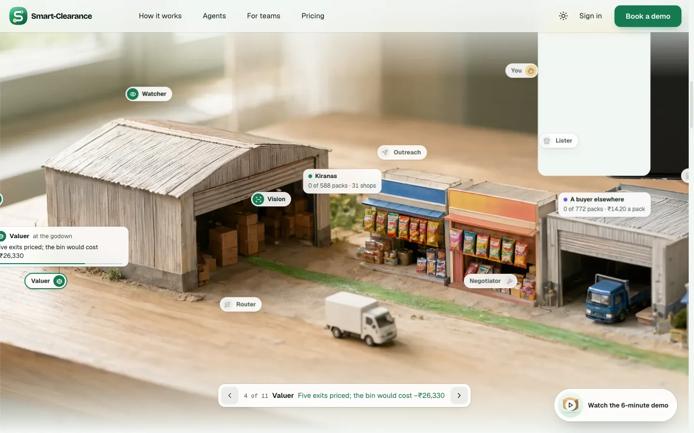
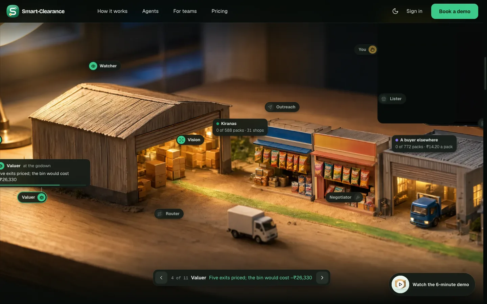
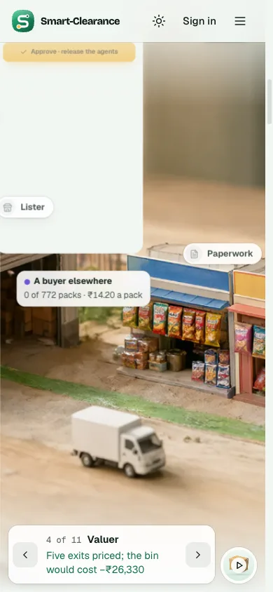
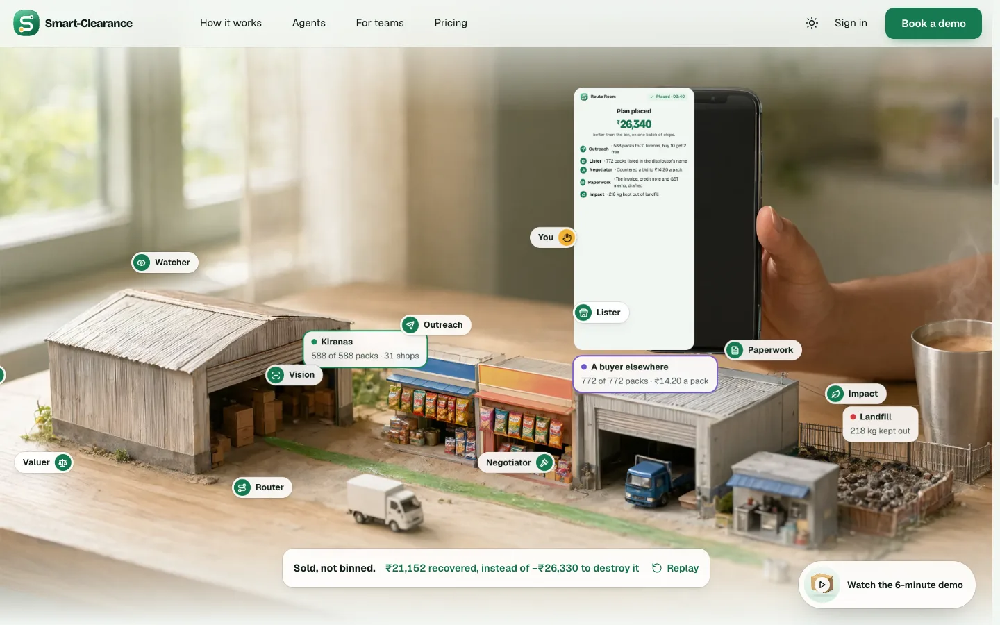
Why
- The closest to the landing page as it is: the agents at their posts, the whole business in one picture.
- Calm: the picture barely moves; the cards do the telling.
Trade-offs
- The cards are small, so what each agent is doing is a sentence, not the work itself.
- The agents are at the edges of the picture, not at its centre.
2 · In focus
RecommendedAgents centred, at workOne agent at a time in a large card at the centre of the scene: its icon, name, post, what it did, and what it is doing live inside the card (the Watcher's gates and 1,360; the Valuer's five prices; the Router's split; the yes with ₹21,770 and the amber button; Outreach's Hindi offer; the Lister's lot; the Negotiator's counter; Paperwork's documents; Impact's kilos), with a rail of all eleven to jump between. Behind it the table closes in on the agent's post (1.6×) and recedes a little, so the agent is in focus. Same pace, Pause.
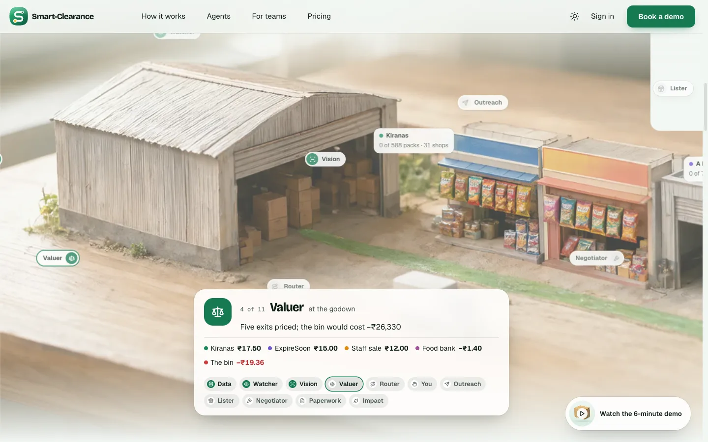
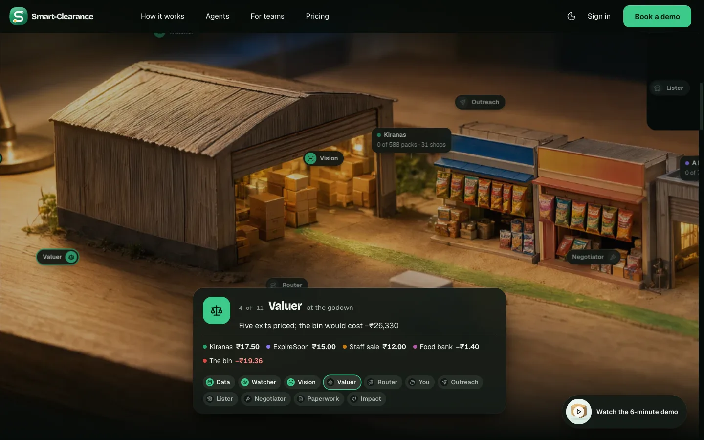
Why
- What was asked for in so many words: the agents centred and in focus, showing what is happening.
- Each card carries the agent's real work, not a caption: the gates, the prices, the split, the offer, the counter, the documents, the kilos.
- The rail lets a visitor jump to any agent; Pause holds the clock.
Trade-offs
- The table is seen in pieces while the tour runs; it rests on the whole table before and after.
- About 16 s of motion in the section, with Pause (WCAG 2.2.2).
3 · The relay
By scrollOption 2's picture, driven by the scroll instead of the clock: the stage pins, each agent is a stretch of scroll, a rail of the eleven stands at the left (a progress bar on phones). Nothing moves on its own; the visitor sets the pace.
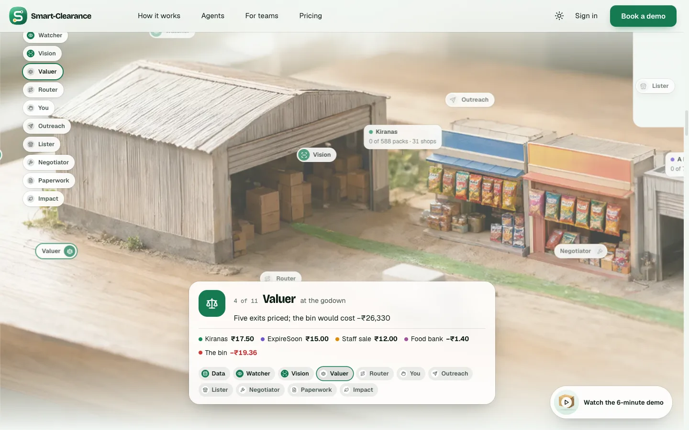
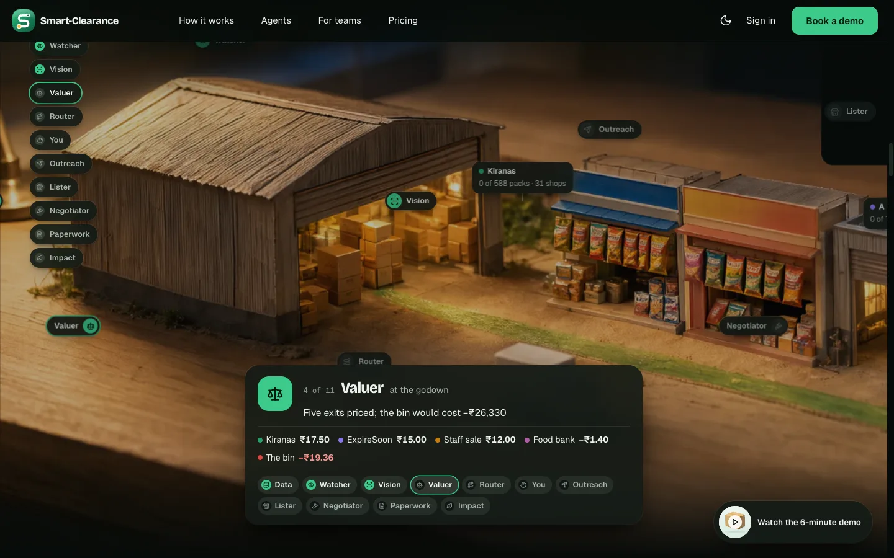
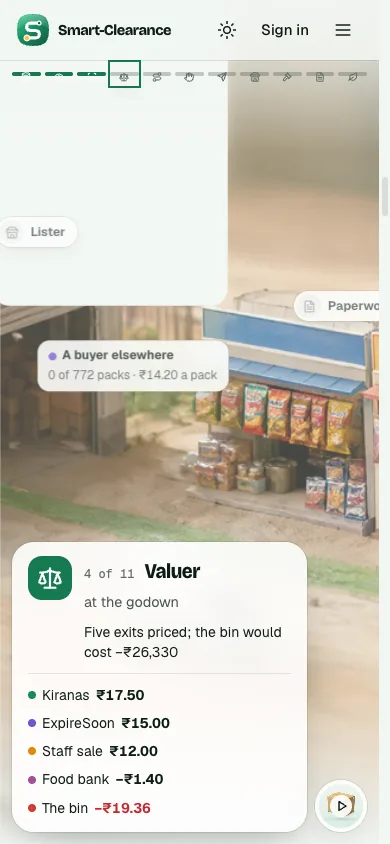
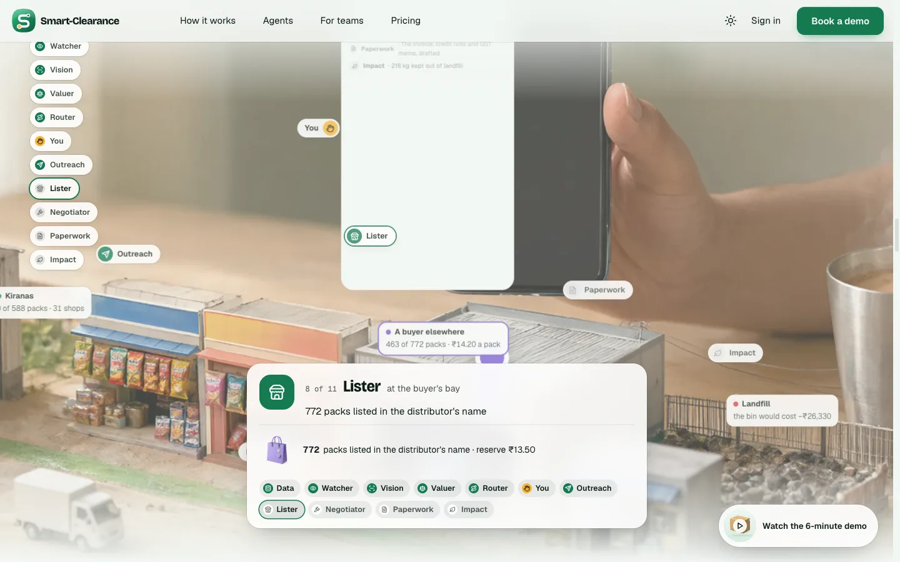
Why
- Under the visitor's hand throughout: no clock, no Pause needed.
- The same cards as option 2.
Trade-offs
- About seven screens of scroll inside the page before the chapters.
- A visitor who scrolls fast sees the agents flicker past.
Open in round 2
- The scene's place. Built after the statement, where the story starts. It could instead sit after the chapters, where the exits strip was.
- The chapters. The scene shows every agent's work; the four chapters show the product's cards. Keep both, or let the scene carry it?
The pick
Round 1: a culmination of A and C (the quote above). Round 2: not yet made. Recommended: 2 · In focus.
Round 1 · The request
Reimagine the entire landing page and see if you can come with something really more engaging that showcases the Agentic journey of smartclearance in a crisp and surreal way and really engaging manner. Come up with the best hero that is real eye catching and compatible across all device types. You have qwen and ltx2.5 and ffmpeg.
Draw inspiration from shopify.com/uk and then see how you can have the similar experience ported over to our app. Think hard and give me 3 best solutions.
The page as it is
The town hero (SC-32 to SC-42): rich, but busy. Eleven pins, a caption, Replay and zoom share the first screen with the heading, and the 16.9 s tour has to be watched to be understood. Below it the story is told three more times, in three more devices. On phones the town is a square the visitor drags and pinches.
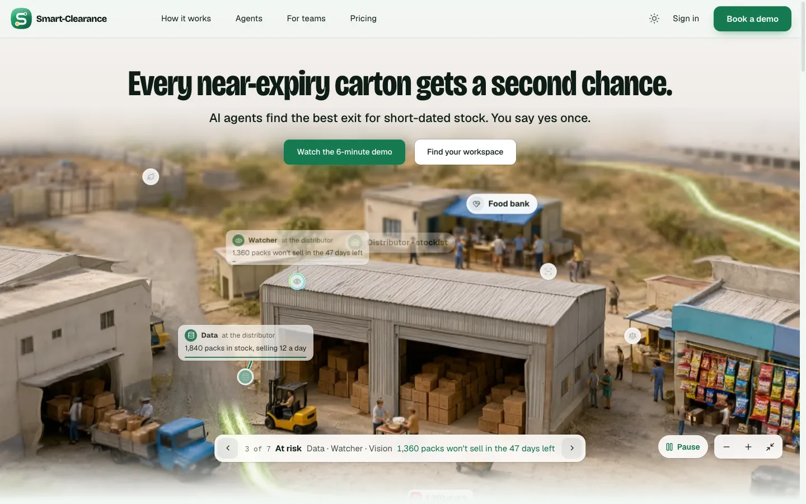
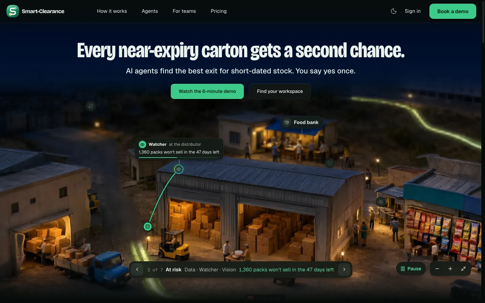
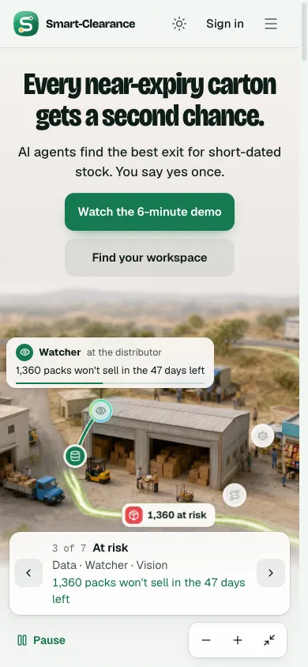
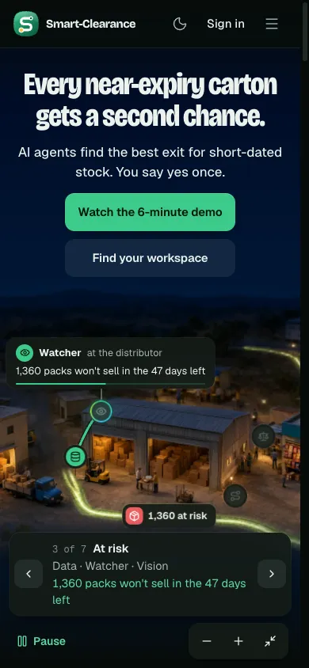
What shopify.com/uk does, and what is ported
Read on 7 Oct 2026 at 1440 and 390. Its page is about 11,000 px tall, near-black, in light display type, and every section shows the product in motion. What carries over is the grammar, not the clothes: our type, our grounds, both themes, and figures from core/money.js.
| Shopify | Here, in every option |
|---|---|
| A film of one real merchant at work, a few huge words over it, the last word rotating. | The first viewport is one scene of the business, not a header: a film of it (A), the whole of it in the sky (B), or the one human moment in it (C). |
| A statement that fills in word by word as it is scrolled. | One paragraph, 28 to 64 px, whose words fill from the tertiary ink to the full ink as it is read. Both inks hold 4.5:1, so it reads before it fills. |
| Chapters as inset panels in committed colours, the product in motion inside. | Chapters as inset colour fields (deep green, sunken, amber for the yes, night green), each with the product's own card at work. |
| A marquee of storefronts as proof. | The five exits as a strip of cards, the two taken ones ringed, the bin in red. Nothing loops. |
| A persistent film pill, bottom right. | "Watch the 6-minute demo" as a pill on every screen, gone at the close. |
| Big numbers in bands. | A ledger: Impact's own document for the batch, its lines filling in. |
A · The film
Shopify's hero, literallyThe miniature business comes alive on film: the forklift rolls out of the godown, the trucks move, the people walk, the painted road brightens once. Over it, enormous light type whose last word turns once through "buyer, shelf, invoice, ledger line" and rests on "chance". The film runs 8 s, so it carries Pause. Below, Shopify's spine: the statement, four chapters, the ledger, the exits, the workspace, plans, the close.
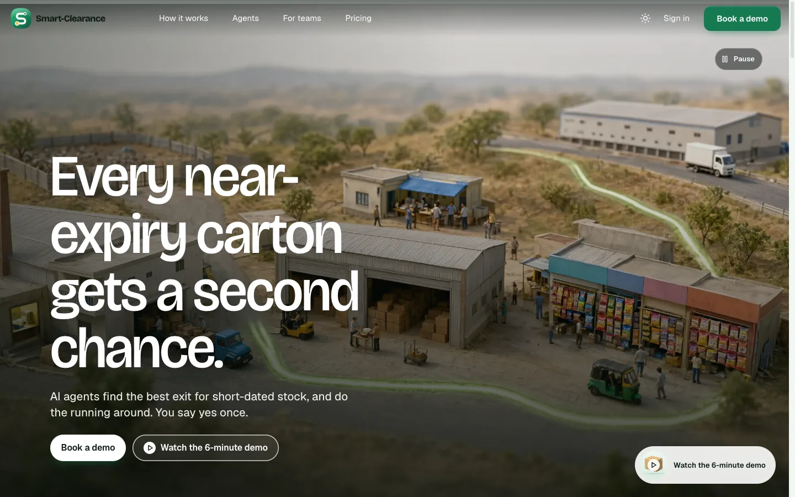
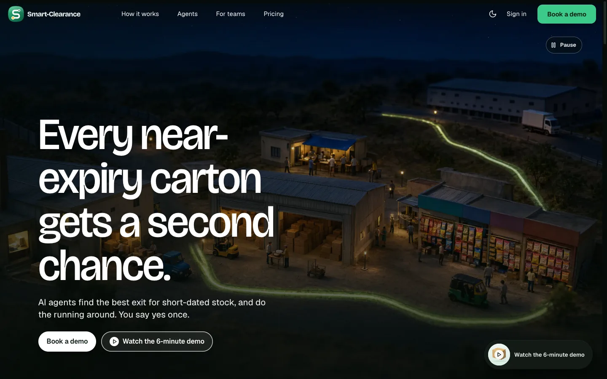
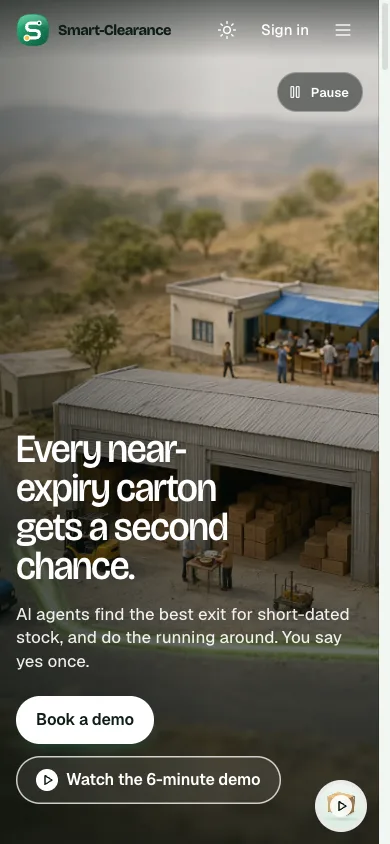
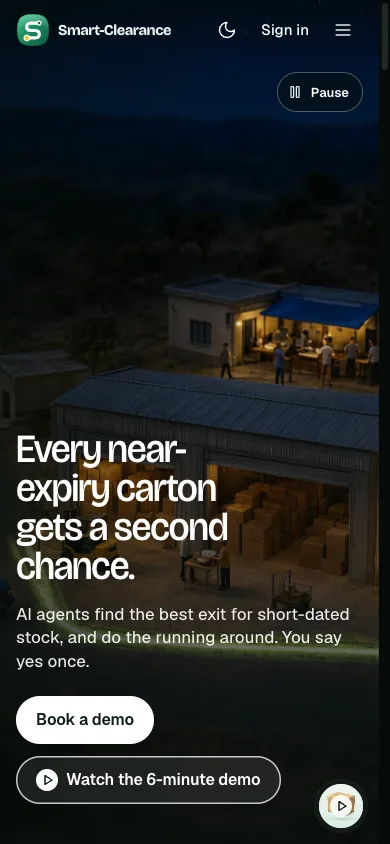
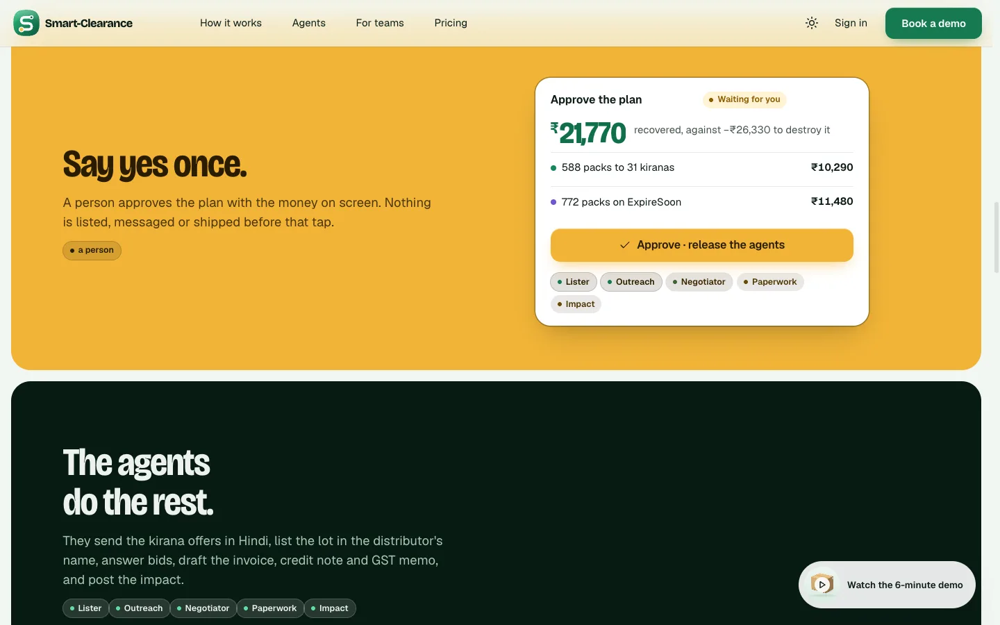
Why
- The most cinematic, and the closest port of Shopify's page.
- The chapters carry the whole story in order, each with the real card.
- The lighter display weight (Bricolage 520) tests Shopify's airiness on our type.
Trade-offs
- Two clips (720p day, 540p night) on the first paint; the plates stand in until they load.
- The hero shows the world, not the mechanism; the yes is a chapter down the page.
- The lighter weight departs from DESIGN.md (720 to 780): an open question.
The build would touch
site/site.jsx: the hero, statement, chapters, ledger, exits strip, demo pill.site/assets/media/: the two clips, with sidecars.- The port:
Hero.svelte, newStatement,Chapter,Ledger,ExitsRow,DemoPill;Town.svelteretired.
B · Islands in the sky
The journey is the pageThe business as six islands floating in a sky, joined by the painted road: the maker's factory, the distributor's godown, the kirana lane, a buyer's warehouse, a food bank and, farthest and smallest, the landfill. The copy stands in the band of cloud at the foot. Scrolling drives the stage through six stops: Stocked, At risk, Priced and split, One yes, Sold, Settled. Each lights its island and opens its card with the figure and the agents; during Sold the packs run the road as dots. A rail of the stops at the top left; a progress bar on phones.
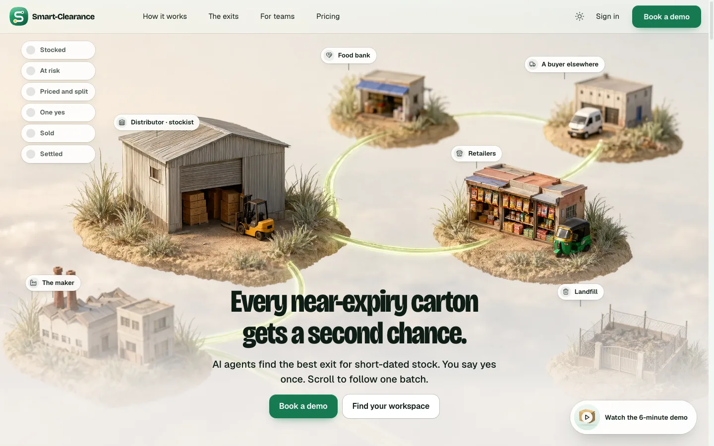
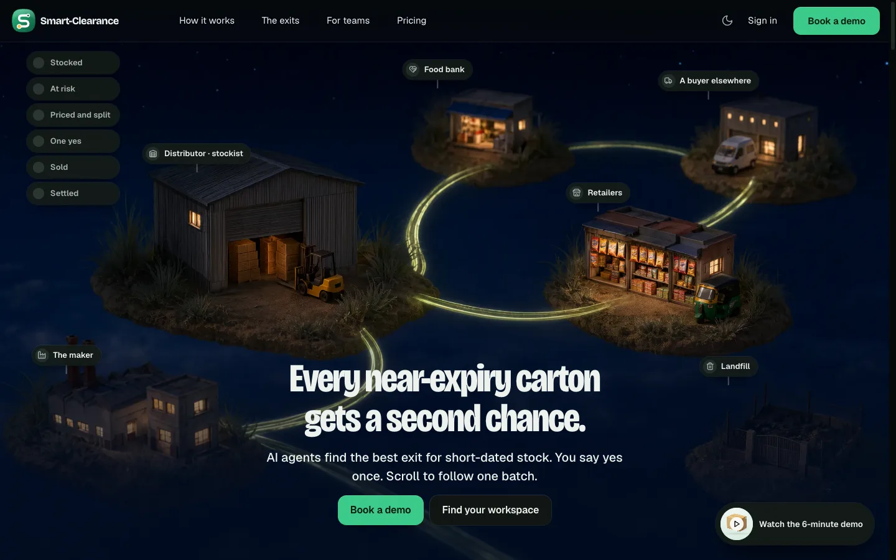
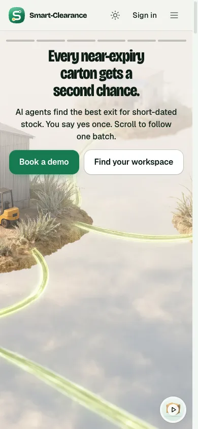
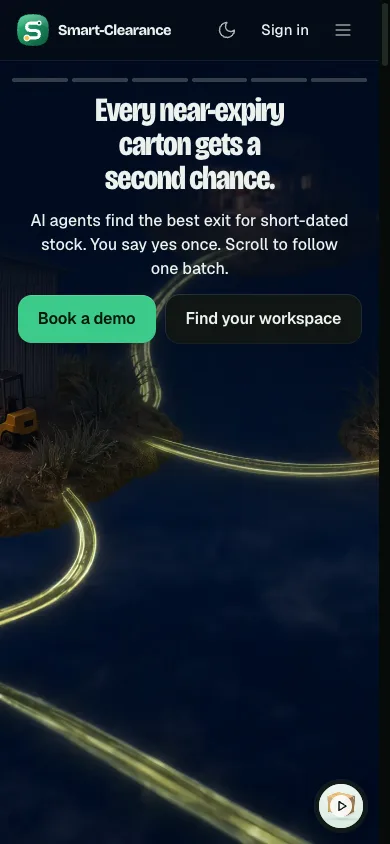
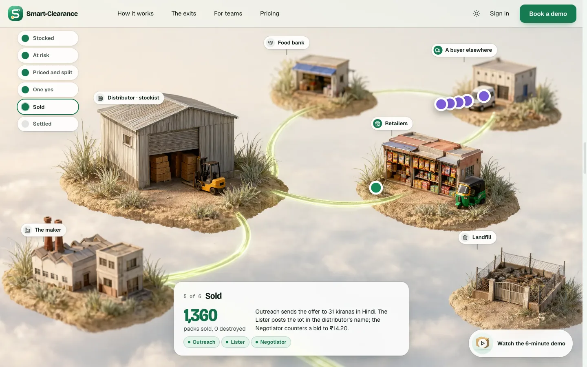
Why
- The journey told most completely, stop by stop, in one picture: the most surreal of the three.
- Under the visitor's hand throughout: no autoplay, no video.
- The same stage on every device, panned on phones.
Trade-offs
- About six screens of scroll before the rest of the page; some visitors scroll through without reading.
- Pins and cards over a busy picture need the wash and the glass to stay legible.
- Close in kind to the town hero the maintainer has iterated three times.
The build would touch
site/site.jsx: the sky stage replaces the town; the statement, ledger, exits strip, demo pill.site/assets/plates/:islands-sky.webpby day and night, with sidecars.- The port:
Sky.svelteonmotion's scroll values;Town.svelteretired.
C · One yes
RecommendedThe human momentShopify's real person at a kitchen counter becomes ours: 09:00, chai, a hand holding a phone over the table, and on the table the business in miniature. The plan is lifted off the phone as the real approve sheet, tied to the screen that shows the same sheet. The Approve button is live: tapping it places the plan, streams the packs out of the sheet to the kiranas and the buyer's truck, lights the agents as they work, and rolls the swing. Replay. Below: the agents' day as one line from 09:00 to the ledger, the exits, the ledger, the workspace, plans, the close.
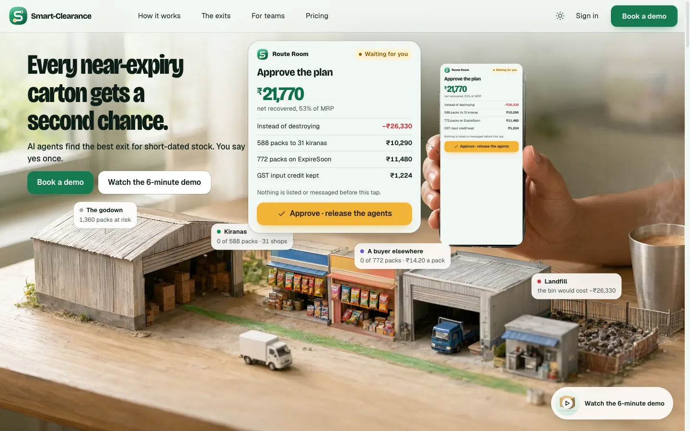
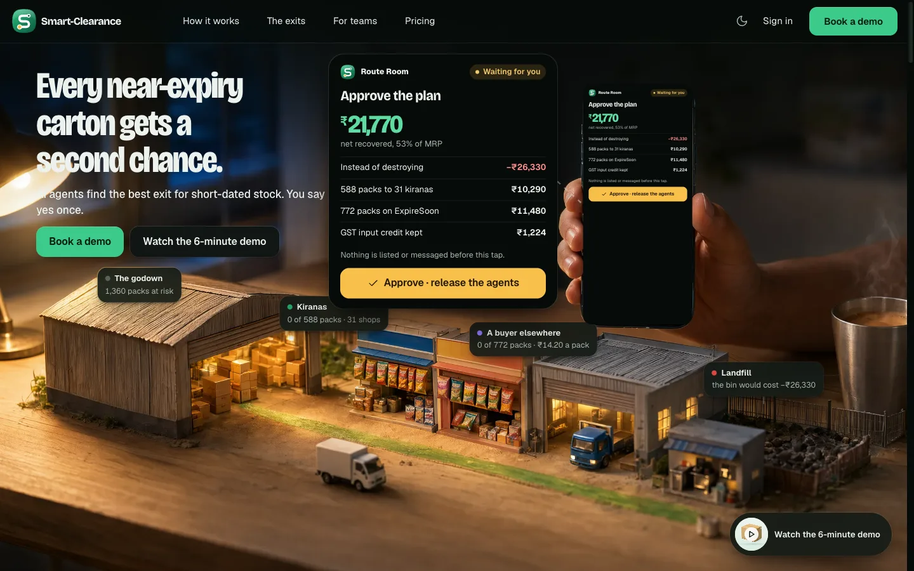
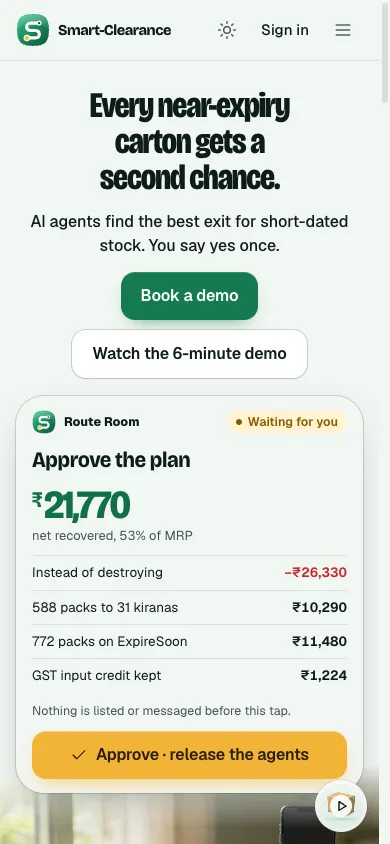
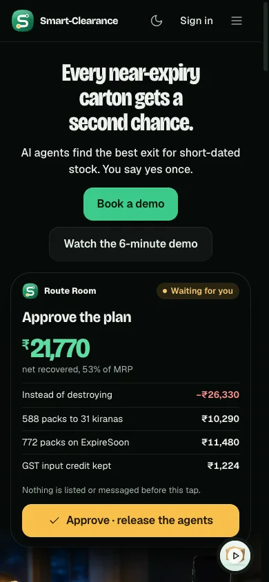
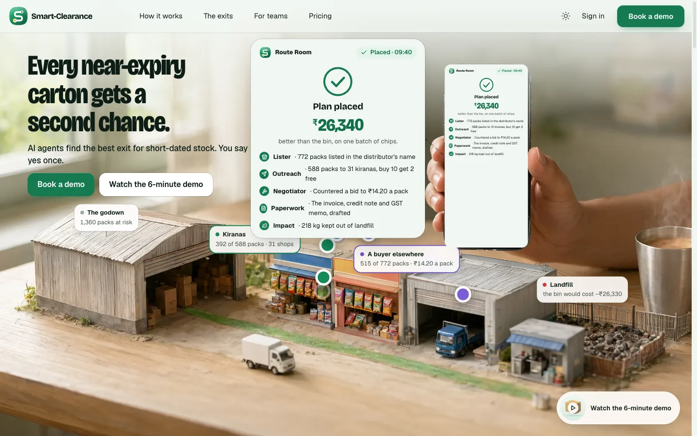
Why
- It proves the mechanism in the first viewport: the money on screen, one tap, the agents at work. What a visitor remembers is "I pressed Approve and watched the packs go".
- The closest in spirit to Shopify's hero, a real human moment, in our world: surreal in scale, calm in colour.
- Honest on every device: the plan is a phone screen, so on a phone it is the screen. No video, no scroll hijack.
Trade-offs
- The lifted sheet must stay in the clear part of the picture at every size: held at 1440 and 390, to be checked at 1366 × 768 and 820 × 1180 in the build.
- A visitor may try to tap the phone itself; the sheet is tied to it with a line and the phone shows the same sheet.
- The hand is a render; the night plate is an edit of the day plate so the geometry holds.
The build would touch
site/site.jsx: the table hero with the live sheet and the stream; the statement, the agents' day, the exits strip, the ledger, the demo pill.site/assets/plates/:table.webpby day and night, with sidecars.- The port:
Yes.svelteandDay.svelte; the approve sheet shared with the app's;Town.svelteretired.
Side by side
| A · The film | B · Islands in the sky | C · One yes | |
|---|---|---|---|
| The hero's idea | The world, alive | The whole journey, in the sky | The one human moment |
| What the visitor does | Watches 8 s, reads, scrolls | Scrolls the journey | Taps Approve |
| Where the agents appear | Chapters down the page | At each stop's card | Lighting on the sheet as they work, then the day's line |
| Phones | The film cropped, copy at the foot | The stage full-screen, panned, card at the foot | Heading, the sheet, then the table; the tap brings the table into view |
| Weight | Two clips, about 2 to 4 MB | Two plates, about 250 kB each | Two plates, about 220 kB each |
| Risk | Type weight; the yes is far down | A long pinned stage | The sheet's place at odd sizes |
Open questions
- A's display weight. Bricolage 520 over the film, Shopify's airiness, against DESIGN.md's 720 to 780. Keep it for the film hero only, or hold the brand weight?
- C's table on film. The table could also be an LTX clip (the chai steams, the lamp flickers once, the van moves) under the live sheet. Worth the weight?
- The exits strip. Every option keeps the workspace, plans and the close. Should the exits strip go, now that the hero and the ledger tell the same batch?
Round 1's pick
A culmination of A and C: A's hero, C's table as the scene of the agents at work. See round 2 above.
Every company, person and figure is fictional. The figures are computed in design3/core/money.js. Plates by Qwen-Image 2.1 (local), clips by LTX 2.5 Fast (local); each carries its prompt sidecar.